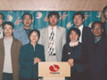
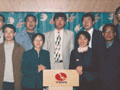

大事记Chronicle of Events
荣誉 大事记 董事会 荷兰股东 研发中心 培训中心 信息中心
 


- 1995年
- 1995年6月，沈阳禾丰牧业有限公司注册成立；7月，首批产品正式问世；9月，销量突破50吨，实现盈亏平衡。
- 1996年
- 1996年，预混料事业开局良好，迅速进入浓缩料、配合料领域，创立凌源禾丰、公主岭禾丰、兴城禾丰。
- 1997年
- 1997年，禾丰公司成为东北最大的预混料生产销售企业。浓缩料事业进一步扩大，创立海城禾丰、西安禾丰。
- 1998年
- 1998年1月，沈阳天地饲料厂并入禾丰；12月，公司正式注册网址，建立邮箱，开始同网络接轨。
- 1999年
- 1999年，在沈阳浑南高新区建立属于自己的现代化工厂和办公楼，涉足原料贸易领域的爱普特贸易公司成立。
打破外资企业垄断，创立民族预混料品牌（1995~1999）
- 2000年
- 2000年，18位优秀的管理者成为禾丰新股东，股东队伍达25人。同年7月，隆重举行五周年庆典。
- 2001年
- 2001年，北京三元禾丰成立，标志禾丰事业突破东北挺进全国。
- 2002年
- 2002年，第15家分公司——上海禾丰饲料有限公司正式成立。
- 2003年
- 2003年，股份制改造完成，拥有18家分公司。
- 2004年
- 2004年，加速全国扩张的步伐，在沈阳农业高新区的“禾丰饲料工业园”初具规模。境外第一家合资 企业朝鲜银丰合 营 会社成立。
- 2005年
- 2005年，创立十年，境外第二家合资企业尼泊尔禾丰成立，9月17日举行了盛大的十周年庆典。
股东队伍扩大，事业实现地域突破（2000~2005）
- 2006年
- 2006年，禾丰公司成功与荷兰De Heus公司合资，总部办公大楼、沈阳禾丰新工厂竣工落成，“禾丰荣膺中国驰名商标。
- 2007年
- 2007年，逆势而上，集团规模进一步壮大，组建7家新公司，集团农业产业化一条龙事业正式启动集 团内部公益 组织——“爱之翼”基金会成立。
- 2008年
- 2008年，加强梯队建设，中层管理者培养计划“向日葵”培训班开班；集团获得荷兰合作银行4.3亿人民币信用贷款。
- 2009年
- 2009年，带领全员成功抗击金融危机，多家新工厂建成、多家新企业成立；全面进军产业化一条龙 事业；全面推广 使用ERP系统，进入信息化管理。
- 2010年
- 2010年，集团成功举办十五周年盛大庆典。开通禾丰网络学院，更加关注员工的生活与成长。
国际化进程加快，综合竞争力持续增强（2006~2010）
- 2011年
- 2011年，集团销售额突破百亿元。全面推广“5-430+双百”养猪盈利模式和“4-168”蛋鸡盈利模式。集团持续推进人才梯队建设，禾苗培训、EDP培训推动集团人才队伍建设更上新台阶。
- 2012年
- 2012年，辽宁禾丰食品建设正式启动，标志着禾丰食品板块应运而生。
- 2013年
- 2013年，集团入围2013年中国制造业企业500强。
- 2014年
- 2014年，8月8日，禾丰牧业于上交所正式上市。集团销售总额再创新高，达到160亿元人民币。
- 2015年
- 2015年, 5月28-29日，“禾种天下，丰收五洲”禾丰牧业二十周年庆典在沈阳成功举行；荆州禾丰、云南禾丰、山西禾丰、安徽禾丰、大连禾源、大连中佳食品、葫芦岛九股河、沈阳文捷生物等多家公司成立；贸易板块正式进军宠物领域，派美特连锁宠物医院盛大启幕； “逛大集”电商云平台宣告启动；禾丰牧业分别与印度NEXUS饲料有限公司、黑龙江华宇集团签订协议，计划在印度、俄罗斯合资建厂；禾丰牧业荣获“全国十大最受欢迎母猪料品牌。